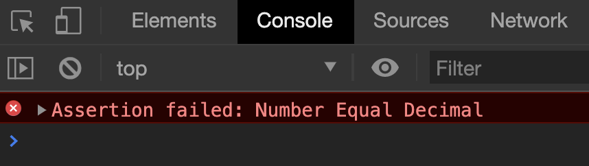

Let’s dive in and fix up those edge cases, shall we? This time, let’s say we have a troublemaker called Tim. Tim can begin with any of these five keys:
A number key
An operator key
The decimal key
The clear key
The equal key
Let’s work through each key combinations one by one, starting with number keys.
Number key first
If Tim clicks a number key, we replace the displayed result with the clicked number. This was already covered in the “Happy Path” code.
After clicking a number, Tim can click any of these keys:
Number->Number (Handled by happy path)
Number->Decimal (Handled by happy path)
Number->Operator (Handled by happy path)
Number->Clear (Handled by happy path)
Number->Equal
We have already handled four of these sequences with the happy path code. Now, we need to handle what happens if Tim clicks equal after a number.
Number -> Equal
Let’s start with a test. If Tim clicks 5 =, the calculator should show 5.
It works! Since it worked, you shouldn‚Äôt see an error message. But we can double confirm things are üëå by testing it out manually.
Note: We should confirm each test manually at least once. This gives us confidence that tests work. If a test fails in future, we know we changed something and broke the calculator. We can easily undo the change when this happens.
We have now handled all possible cases starting with number keys. Tim can still start with four other types of keys:
An operator key
The decimal key
The clear key
The equal key
Let’s work on decimal keys first. (Operator keys are complicated. We’ll get to them in the next lesson).
Decimal key first
If the display shows zero, we should append a decimal. Our code handles this already.
But let’s add a test case to confirm this works (going forward).
Okay, the assertion failed. Let’s see what happens if we press 2 . . manually.
The two . happened because we add . when a user presses a decimal key.
calculatorButtonsDiv.addEventListener('click', event => {
// ...
if (buttonType === 'decimal') {
display.textContent = result + '.'
}
// ...
})
We don’t want to have two decimals. We only want one decimal in the calculator. If the display has a decimal, we can ignore the second decimal.
We can ignore the second decimal with includes. includes checks if a string contains another string. If yes, includes returns true. If no, includes returns false.
// Example of how `includes` work.
// Note: `includes` is case-sensitive.
const string = 'The hamburgers taste pretty good!'
const hasExclamation = string.includes('!')
console.log(hasExclamation) // true
If the displayed content contains a decimal already, we don’t display another decimal. We simply do nothing.
calculatorButtonsDiv.addEventListener('click', event => {
// ...
if (buttonType === 'decimal') {
if (result.includes('.')) {
// Do nothing
} else {
display.textContent = result + '.'
}
}
// ...
})
An empty if statement looks weird. We can flip the condition over with a NOT (!) operator.
calculatorButtonsDiv.addEventListener('click', event => {
// ...
if (buttonType === 'decimal') {
if (!result.includes('.')) {
display.textContent = result + '.'
}
}
// ...
})
Let’s go a little further. What happens if Tim presses 2 . 5 . 5? Ideally, we should show 2.55. Our calculator does with the above code.
Try testing the calculator with operator keys. You’ll notice JavaScript Math operations (plus, minus, times, and divide) strip unnecessary decimals from the result.
1 . + 5 =. Calculator shows 6.
1 . - 5 =. Calculator shows -4.
1 . * 5 =. Calculator shows 5.
1 . / 5 =. Calculator shows 0.2.
Decimal points stripped when there's a calculation.
We can make use of this pattern!
We can remove unnecessary decimal points by multiplying the result by 1. (Because anything times 1 gives itself).
If Tim clicks on equal first, the calculator should remain as 0. No calculations are done. We’ve already handled this with our code above, but let’s put a test case to ensure it happens.
Next, we want to consider possible key combinations with equal.
Equal->Number
Equal->Decimal
Equal->Operator
Equal->Equal (Handled by code above)
Equal->Clear (Handled by happy path)
Equal -> Number
If Tim presses a number key after an equal key, we can assume they want to start a new calculation. This new calculation should not contain any values from the previous calculation.
The first test case (Equal Number) passed while the second test case (Number Equal Number) failed.
Let’s press 5 = 3 manually and see what happens.
Ah, this happened because we added the key to the result if result !== 0.
calculatorButtonsDiv.addEventListener('click', event => {
// ...
if (buttonType === 'number') {
if (result === '0') {
display.textContent = key
} else {
// This is the problem
display.textContent = result + key
}
if (previousButtonType === 'operator') {
display.textContent = key
}
}
// ...
})
To fix this, we need to know if the user pressed equal previously. If they did, we’ll replace the result with the number pressed.
calculatorButtonsDiv.addEventListener('click', event => {
// ...
if (buttonType === 'number') {
if (result === '0') {
display.textContent = key
} else {
display.textContent = result + key
}
if (previousButtonType === 'operator') {
display.textContent = key
}
if (previousButtonType === 'equal') {
display.textContent = key
}
}
// ...
})
The test should pass now!
Before we move on, let’s clear the custom attributes we used. We do this because we assume the user wants to make a brand new calculation. We don’t want previous calculations to affect their results.
If the user presses a decimal key after an equal key, we can also assume they’re starting a new calculation. This new calculation should not contain any values from the previous calculation.
Hmm ü§î. The Equal Decimal test passed, but the Number Equal Decimal test failed.

But why? Let’s press 5 = . manually and see what happened.
You’ll understand why if you look at the decimal part of the code. We didn’t care if the user pressed equal before a decimal!
calculatorButtonsDiv.addEventListener('click', event => {
// ...
if (buttonType === 'decimal') {
if (!result.includes('.')) {
display.textContent = result + '.'
}
}
// ...
})
Fixing this is easy. If the user clicked equal previously, we set the displayed content to 0..
calculatorButtonsDiv.addEventListener('click', event => {
// ...
if (buttonType === 'decimal') {
if (!result.includes('.')) {
display.textContent = result + '.'
}
if (previousButtonType === 'equal') {
display.textContent = '0.'
}
}
// ...
})
Since users are creating a brand new calculation, we also need to reset the calculator.
calculatorButtonsDiv.addEventListener('click', event => {
// ...
if (buttonType === 'decimal') {
if (!result.includes('.')) {
display.textContent = result + '.'
}
if (previousButtonType === 'equal') {
resetCalculator()
display.textContent = '0.'
}
}
// ...
})
The test case should pass now üòÑ.
Equal -> Operator
If Tim clicks an operator key after the equal key, we can assume he wants to continue with the calculation. This time, they want to use the result of the previous calculation as the base of their first number.
So this should be true:
Tim presses 1 + 1 =. Calculator shows 2.
Tim continues to press +. Calculator remains at 2.
We want to do two things when a user presses an operator key:
Highlight the operator
Prepare the calculator for calculation.
We’ve done both of these in the happy-path code. If Tim presses operator first, we simply use 0 (which is the displayed value) as firstValue. So there’s nothing to do here.
After pressing an operator key, Tim can press any of these keys:
Operator->Number (Handled with happy-path code)
Operator->Operator (Handled with happy-path code)
Operator->Decimal
Operator->Equal
Operator->Clear (Handled with happy-path code)
Operator -> Decimal
If Tim clicks the decimal key after an operator key, we assume he wants to begin the second number with 0.. At this point, the calculator should show 0..